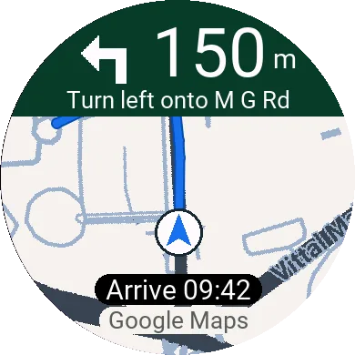
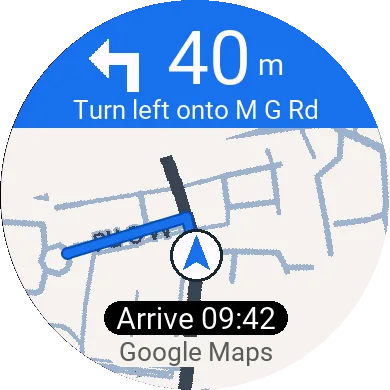
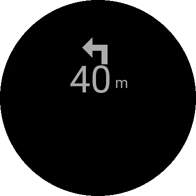
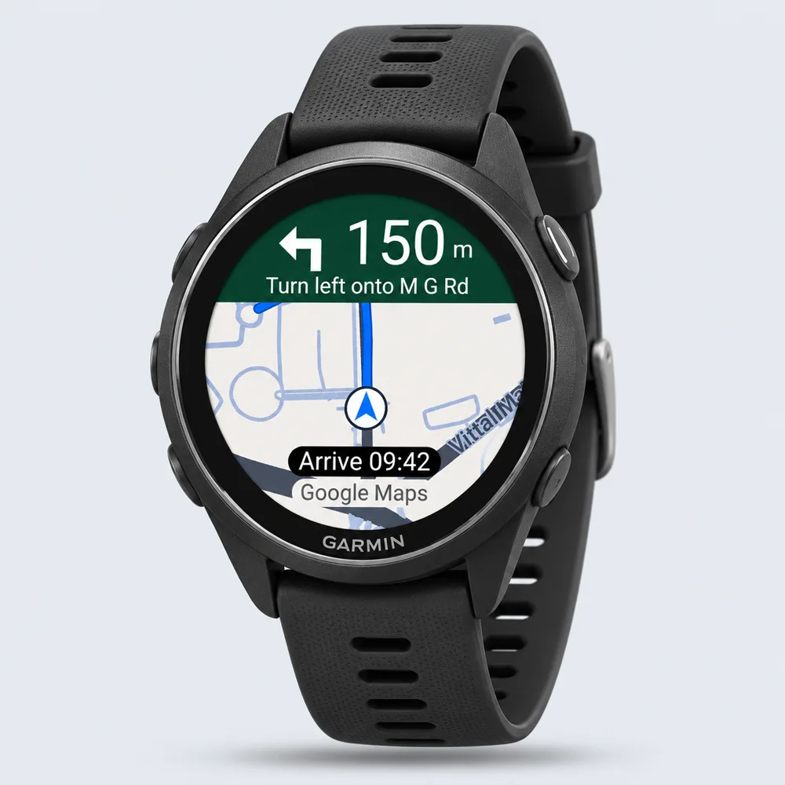
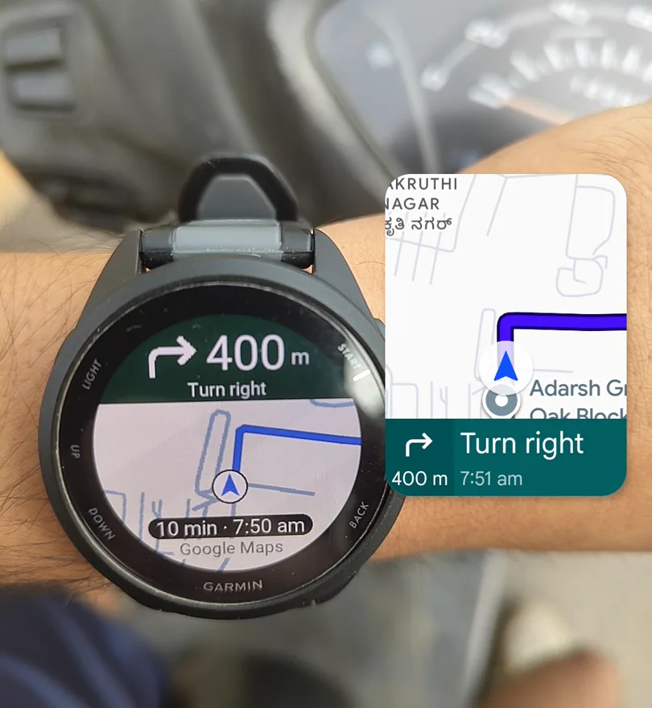

Live map view Actual simulator screenshot
A high-contrast map that turns with you. Route, next street and arrival time in one glance.
Live on the Connect IQ Store
Google Maps directions, the live road map and the next turn — mirrored onto your Garmin. Phone in your pocket. Eyes on the road.

01 Capabilities
A map when you need the bigger picture. A clear cue when it is time to turn. Nothing else competing for your attention.



Live map view Actual simulator screenshot
A high-contrast map that turns with you. Route, next street and arrival time in one glance.
Heads-up
25s
A long vibration about 25 seconds out, so you never have to look down to know something is coming.
Final cue
6s
A second pattern about six seconds before the turn, timed to how fast you are actually moving.
Privacy
0
NavMap draws the route it is given. It does not record where you have been, and there is no account to log into.
Read the privacy policyTravel modes
4
Car, motorbike, bicycle or walking. NavBridge reads the mode Google Maps is already using and adapts.
Compatibility
19
From the 42 mm epix Pro to the 51 mm case, and every Forerunner, Venu and vívoactive in between.
Find your watch
02 — On the road
Pick a place in Google Maps. Let NavBridge bring the directions to your wrist — the same route, without the phone in your hand.
Share a destination to Navigate with NavMap for the route line. NavBridge adapts to your travel mode and recalculates when you take another road.
No location tracking, no account. Turn guidance works free out of the box; map backgrounds use your own Google Cloud key, with your consent.
03 — How it works
NavMap lives on your watch. NavBridge connects it to your phone. Three steps, about five minutes.
Start the setup guideInstall NavBridge on Android, then get NavMap from the Connect IQ Store — or build the watch app from source.
Free companion · one-time unlock
Arrows work immediately with no setup. Optionally paste a free Google Cloud key into NavBridge for satellite and street map backgrounds.
Maps key is optional
Open both apps to pair. In Google Maps, share a destination to Navigate with NavMap for turns, the route line and arrival time.
Share → Navigate with NavMap
04 — Compatibility
Every current Garmin AMOLED family, paired with an Android phone and Garmin Connect. If your watch is not on this list, it is not supported.
Android 8.0+ with Google Maps and Garmin Connect required. iPhone and MIP watches — including fēnix 7, Forerunner 255/955 and Instinct — are not supported.
05 — Get started
One watch app. One free companion. Seven days to try it before anything is due.
The map, the next turn and a heads-up on your wrist.
US$1.99 outside India — international checkout opening soon.
The store lists NavMap as free because it runs a trial. The unlock is charged by our own checkout, not by Garmin.
The bridge between Google Maps and your Garmin. Pair, add a key, go.
APK from GitHub release notes and checksums
A note on map costs. Maps and routes use your own Google Cloud key. Billing must be enabled; Google’s monthly free usage caps apply, and usage beyond them is billed by Google. Check current pricing.
Prefer to build it yourself? Get the source and build guide. Prebuilt watch packages are not offered here.
NavBridge requires Android 8.0 or newer and access to Google Maps navigation notifications. There is no iOS companion, so NavMap does not currently support iPhones.
You need your Android phone with you, connected to the watch through Garmin Connect. Google Maps handles navigation on the phone; NavMap displays the directions on your wrist.
New map images and rerouting need internet. Turn guidance can continue while Google Maps is still providing navigation notifications, and a route already received by the watch can still be drawn. Keep the phone connected to the watch.
Open a destination in Google Maps, tap Share, then choose Navigate with NavMap. Starting with Google Maps’ regular Start button provides turn directions but does not share the route. Your key also needs the Routes API enabled.
Garmin limits how long a Connect IQ app can keep the display bright. NavMap switches to a simple arrow and distance when dimmed. For longer trips, open NavMap from the watch’s app list before starting Google Maps; opening from the phone prompt can time out after about two minutes.
No. NavMap is a navigation display, not an activity recorder. It does not keep a location history. When navigation finishes it shows “Arrived” and closes.